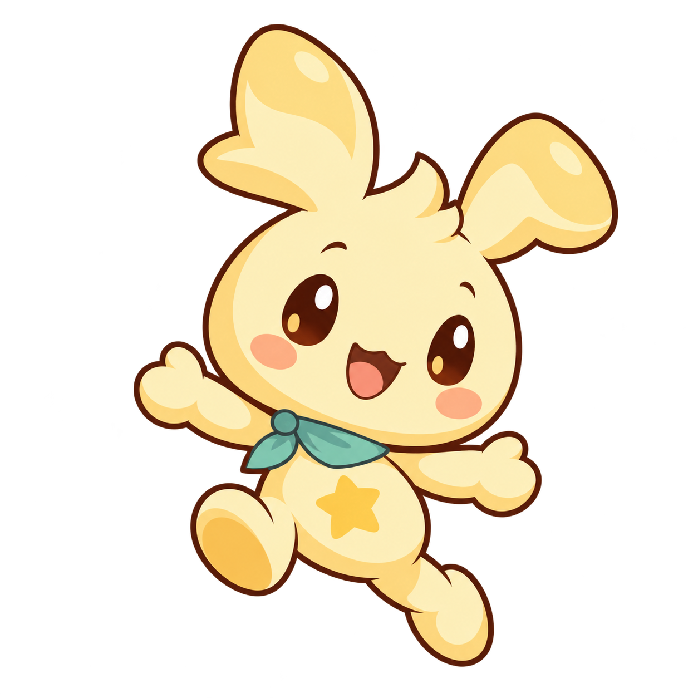

✦
별냠
STAR MUNCH
별을 냠, 하늘로 폴짝.
최고 높이
0
m
구름 정원
0
m
✦
0
도약 준비 완료
SPACE
양쪽 함께 · 여기를 눌러도 도약
A LITTLE HIGHER, A LITTLE HAPPIER

한 입 더,
한 뼘 높이.
별 하나 먹고, 크게 폴짝!
공중에서 다음 별을 골라요.
준비하는 중…
←
→
이동 ·
SPACE
도약
화면 왼쪽·오른쪽을 눌러 이동
양쪽을 함께 누르면 도약
☁
TAKE A LITTLE BREATH
구름 위에서 쉬는 중
준비되면 별길을 이어 가요.
계속 날아가기
↗
처음부터 다시
A LOVELY LITTLE FLIGHT
멋진 비행이었어요!
0
m
별을 먹으면 다시 떠올라요.
모은 별
0
점수
0
최고 높이
0 m
한 번 더 날아가기
↗
R
또는
SPACE
다시 시작
‹
왼쪽
›
오른쪽
CLOUD GARDEN
01